更容易拼的照片图纸
原图 / 相同平滑与色板拟合的仅量化结果 / 区域聚合与小块合并。默认最长边 72 格，最多 10 色，小于 5 粒的色块优先合并。
自动颜色不是品牌色号。每格一粒；PDF 按实际大小 100% 打印，检查 50mm 标尺。简化会损失细节，人物可尝试均衡预设或降低小块阈值。
01_portrait
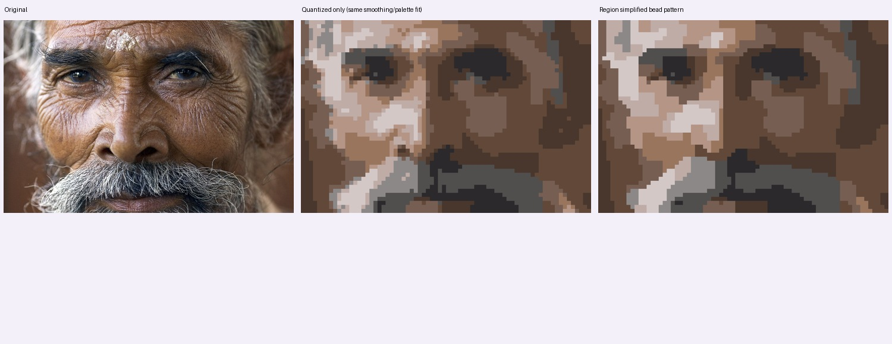
72×48 格 · 10 色 · 3456 粒 · 孤立单粒 75 → 8
可打印 PDF · 完整编号 PNG · 矢量 SVG · 下载全部图纸与清单
配色与净用量
B01 · A09
839 粒 · #614839
B02 · A03
572 粒 · #49372D
B03 · A06
534 粒 · #765E52
B04 · A01
332 粒 · #514E4E
B05 · A07
247 粒 · #2B292B
B06 · A02
224 粒 · #B59586
B07 · A04
210 粒 · #D4C8C7
B08 · A08
205 粒 · #BFACA7
B09 · A10
178 粒 · #99755E
B10 · A05
115 粒 · #8D8888
Jorge Royan · CC BY-SA 3.0 · 原照片来源
02_portrait
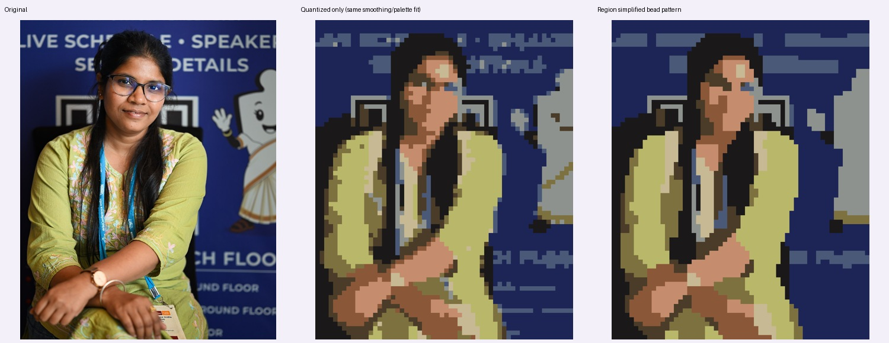
58×72 格 · 10 色 · 4176 粒 · 孤立单粒 115 → 1
可打印 PDF · 完整编号 PNG · 矢量 SVG · 下载全部图纸与清单
配色与净用量
B01 · A01
1250 粒 · #1D2556
B02 · A05
663 粒 · #1A1819
B03 · A08
557 粒 · #B9B76A
B04 · A09
318 粒 · #8D928E
B05 · A06
265 粒 · #4B5978
B06 · A07
263 粒 · #C58C6E
B07 · A10
247 粒 · #8B5739
B08 · A02
240 粒 · #7E7140
B09 · A04
224 粒 · #4A3C28
B10 · A03
149 粒 · #C6B993
JyotiPN · CC BY-SA 4.0 · 原照片来源
03_portrait
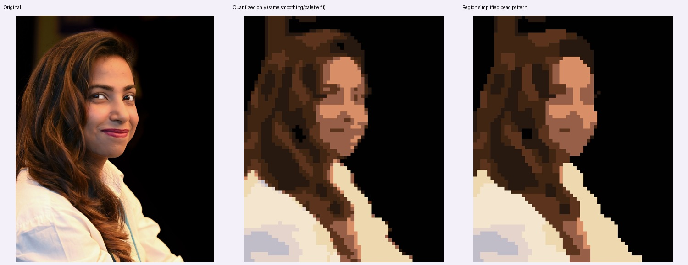
58×72 格 · 10 色 · 4176 粒 · 孤立单粒 81 → 5
可打印 PDF · 完整编号 PNG · 矢量 SVG · 下载全部图纸与清单
配色与净用量
B01 · A01
1822 粒 · #020101
B02 · A05
466 粒 · #402513
B03 · A09
430 粒 · #271810
B04 · A03
360 粒 · #5C341E
B05 · A08
287 粒 · #EDD8B0
B06 · A02
269 粒 · #F4E6CE
B07 · A04
219 粒 · #975F48
B08 · A06
157 粒 · #D88F67
B09 · A10
92 粒 · #E5D4CC
B10 · A07
74 粒 · #C1BDC8
JyotiPN · CC BY-SA 4.0 · 原照片来源
04_portrait
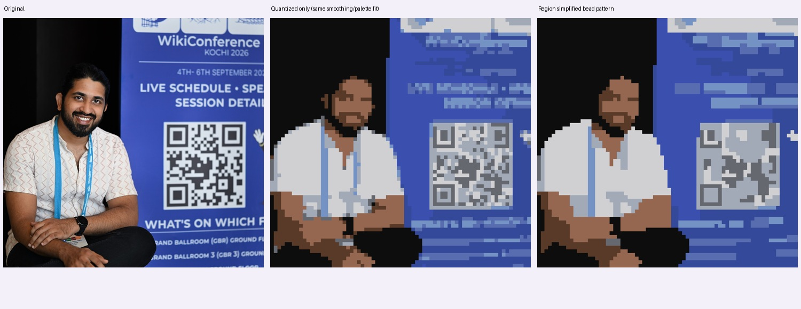
72×69 格 · 10 色 · 4968 粒 · 孤立单粒 162 → 0
可打印 PDF · 完整编号 PNG · 矢量 SVG · 下载全部图纸与清单
配色与净用量
B01 · A03
1169 粒 · #0E0D0D
B02 · A09
763 粒 · #35499A
B03 · A05
738 粒 · #D0D0D3
B04 · A01
657 粒 · #3B4FAF
B05 · A10
431 粒 · #A2AAB7
B06 · A04
365 粒 · #956751
B07 · A07
250 粒 · #586CB0
B08 · A06
242 粒 · #7592C4
B09 · A08
188 粒 · #593A29
B10 · A02
165 粒 · #666870
JyotiPN · CC BY-SA 4.0 · 原照片来源
05_portrait
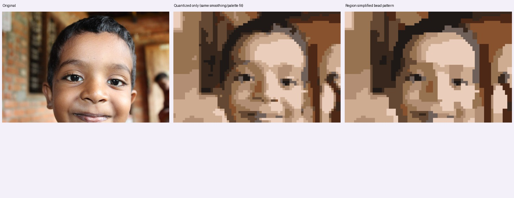
72×48 格 · 10 色 · 3456 粒 · 孤立单粒 101 → 5
可打印 PDF · 完整编号 PNG · 矢量 SVG · 下载全部图纸与清单
配色与净用量
B01 · A04
592 粒 · #987352
B02 · A09
499 粒 · #EACDBA
B03 · A02
479 粒 · #CEAC92
B04 · A07
359 粒 · #B28E74
B05 · A10
318 粒 · #644833
B06 · A05
302 粒 · #37271C
B07 · A03
285 粒 · #1E1917
B08 · A06
256 粒 · #4E2817
B09 · A01
231 粒 · #87522D
B10 · A08
135 粒 · #70605A
Keerikkadanjose · CC0 · 原照片来源
06_portrait
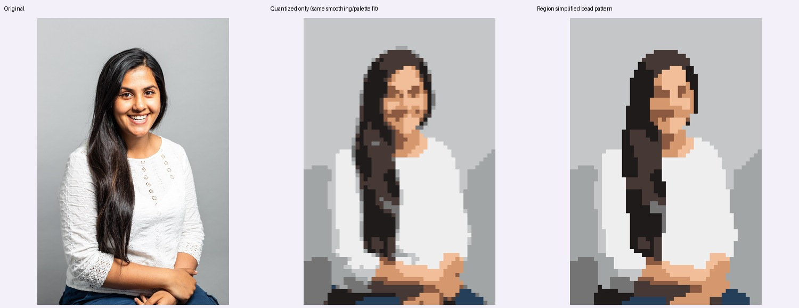
48×72 格 · 10 色 · 3456 粒 · 孤立单粒 81 → 2
可打印 PDF · 完整编号 PNG · 矢量 SVG · 下载全部图纸与清单
配色与净用量
B01 · A05
1316 粒 · #C4C6C7
B02 · A01
647 粒 · #EFEEEE
B03 · A04
440 粒 · #A2A5A5
B04 · A06
304 粒 · #201B1B
B05 · A08
230 粒 · #463935
B06 · A03
176 粒 · #D5976D
B07 · A07
121 粒 · #F1BE99
B08 · A02
114 粒 · #757475
B09 · A09
65 粒 · #8B5A41
B10 · A10
43 粒 · #253E5A
Justine Desmond / Brighton & Hove City Council · OGL 3 · 原照片来源
07_portrait
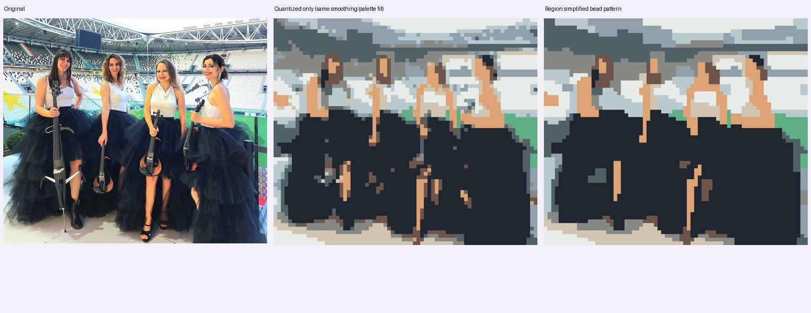
72×62 格 · 10 色 · 4464 粒 · 孤立单粒 125 → 0
可打印 PDF · 完整编号 PNG · 矢量 SVG · 下载全部图纸与清单
配色与净用量
B01 · A02
1883 粒 · #202630
B02 · A06
511 粒 · #E7ECE8
B03 · A07
414 粒 · #506168
B04 · A08
329 粒 · #DDA374
B05 · A01
311 粒 · #B9CACF
B06 · A10
303 粒 · #888984
B07 · A05
278 粒 · #90A1AB
B08 · A04
233 粒 · #CFC5B0
B09 · A03
126 粒 · #6E554C
B10 · A09
76 粒 · #5EAF85
Luisa Cello · CC0 · 原照片来源
08_portrait
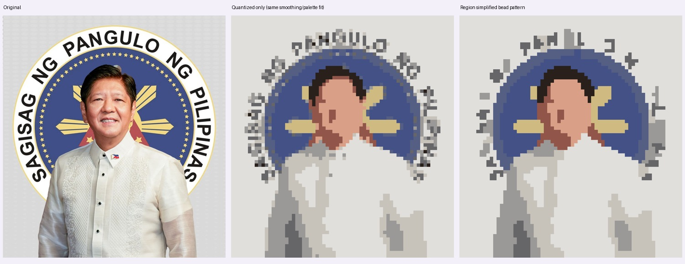
66×72 格 · 10 色 · 4752 粒 · 孤立单粒 225 → 0
可打印 PDF · 完整编号 PNG · 矢量 SVG · 下载全部图纸与清单
配色与净用量
B01 · A05
2644 粒 · #E0DFDB
B02 · A03
487 粒 · #435186
B03 · A02
401 粒 · #C7C3BB
B04 · A10
354 粒 · #9B9997
B05 · A09
246 粒 · #555E83
B06 · A04
174 粒 · #DAA087
B07 · A01
157 粒 · #666568
B08 · A06
116 粒 · #CFBB81
B09 · A08
95 粒 · #92554A
B10 · A07
78 粒 · #29201B
Congress of the Philippines · Public domain · 原照片来源
13_portrait
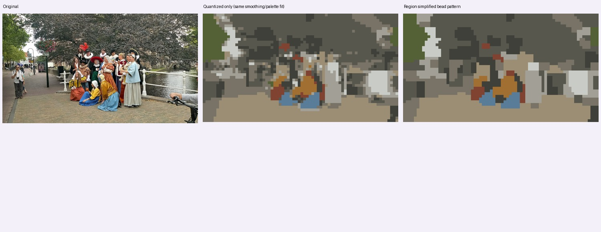
72×40 格 · 10 色 · 2880 粒 · 孤立单粒 116 → 0
可打印 PDF · 完整编号 PNG · 矢量 SVG · 下载全部图纸与清单
配色与净用量
B01 · A01
924 粒 · #58574E
B02 · A02
613 粒 · #9C8E74
B03 · A08
341 粒 · #787366
B04 · A07
326 粒 · #3F4039
B05 · A04
232 粒 · #A2A096
B06 · A06
149 粒 · #546035
B07 · A09
123 粒 · #C9CCC6
B08 · A03
63 粒 · #A16F31
B09 · A05
57 粒 · #597C98
B10 · A10
52 粒 · #804231
Donald Trung Quoc Don (Chữ Hán: 徵國單) - Wikimedia Commons - © CC BY-SA 4.0 International.(Want to use this image?)Original publication 📤: --Donald Trung 『徵國單』 (No Fake News 💬) (WikiProject Numismatics 💴) (Articles 📚) 22:58, 14 November 2019 (UTC) · CC BY-SA 4.0 · 原照片来源
14_portrait
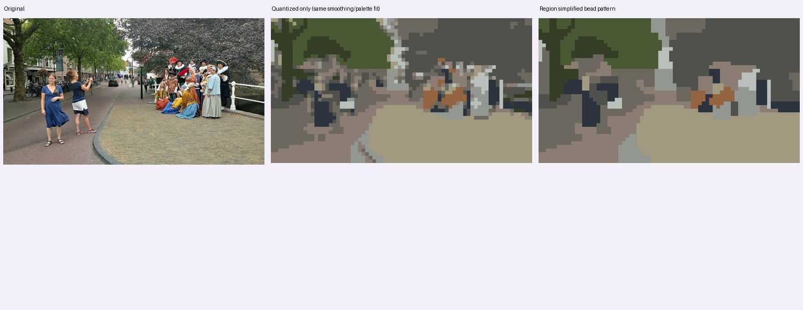
72×40 格 · 10 色 · 2880 粒 · 孤立单粒 121 → 0
可打印 PDF · 完整编号 PNG · 矢量 SVG · 下载全部图纸与清单
配色与净用量
B01 · A04
638 粒 · #A19A80
B02 · A02
618 粒 · #50514C
B03 · A03
407 粒 · #6C685F
B04 · A10
349 粒 · #8B7D73
B05 · A06
287 粒 · #495933
B06 · A01
166 粒 · #939792
B07 · A05
162 粒 · #353D27
B08 · A07
145 粒 · #2C333E
B09 · A09
67 粒 · #B9BFBA
B10 · A08
41 粒 · #93643F
Donald Trung Quoc Don (Chữ Hán: 徵國單) - Wikimedia Commons - © CC BY-SA 4.0 International.(Want to use this image?)Original publication 📤: --Donald Trung 『徵國單』 (No Fake News 💬) (WikiProject Numismatics 💴) (Articles 📚) 22:58, 14 November 2019 (UTC) · CC BY-SA 4.0 · 原照片来源
15_landscape
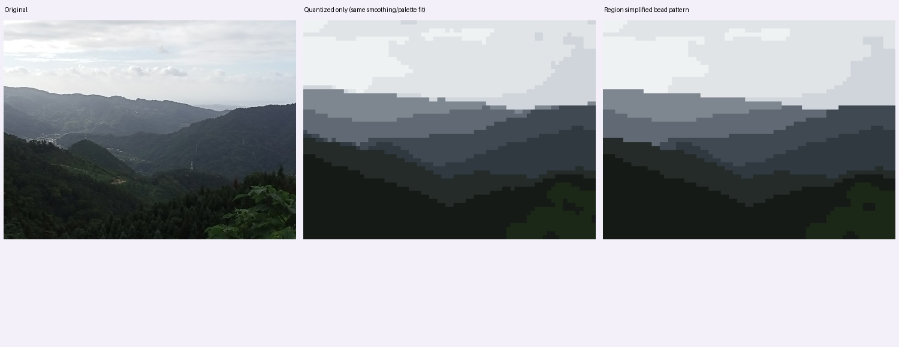
72×54 格 · 10 色 · 3888 粒 · 孤立单粒 7 → 0
可打印 PDF · 完整编号 PNG · 矢量 SVG · 下载全部图纸与清单
配色与净用量
B01 · A09
841 粒 · #E1E4E7
B02 · A03
812 粒 · #161A16
B03 · A08
344 粒 · #242B29
B04 · A02
336 粒 · #EFF2F3
B05 · A06
314 粒 · #404952
B06 · A04
313 粒 · #313940
B07 · A01
278 粒 · #616974
B08 · A05
231 粒 · #CFD5DB
B09 · A07
222 粒 · #7E8690
B10 · A10
197 粒 · #1B2717
Kai3952 · CC BY-SA 4.0 · 原照片来源
16_landscape
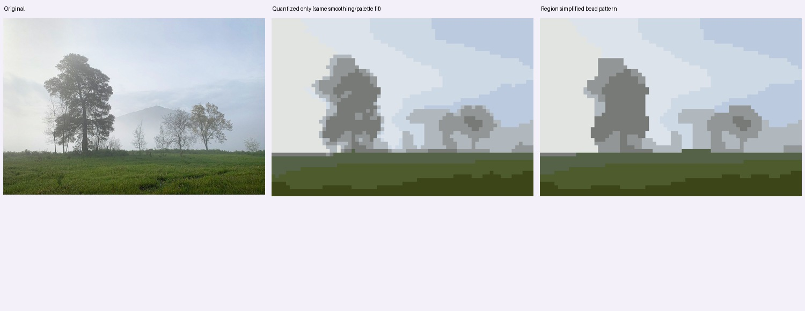
72×49 格 · 10 色 · 3528 粒 · 孤立单粒 31 → 0
可打印 PDF · 完整编号 PNG · 矢量 SVG · 下载全部图纸与清单
配色与净用量
B01 · A01
561 粒 · #CED9E6
B02 · A04
522 粒 · #E2E4E1
B03 · A08
442 粒 · #DDE3EA
B04 · A09
414 粒 · #BBCADE
B05 · A02
343 粒 · #4D5B2D
B06 · A10
291 粒 · #3B4518
B07 · A07
253 粒 · #787A78
B08 · A06
240 粒 · #B0B7BD
B09 · A03
234 粒 · #929697
B10 · A05
228 粒 · #556248
Sergei Gussev · CC BY 4.0 · 原照片来源
17_architecture
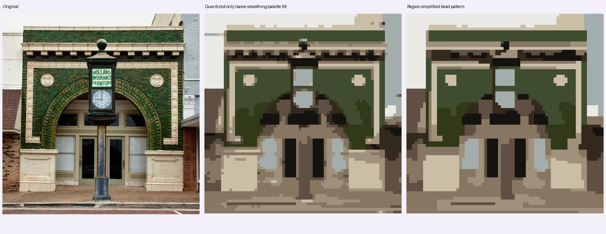
71×72 格 · 10 色 · 5112 粒 · 孤立单粒 95 → 0
可打印 PDF · 完整编号 PNG · 矢量 SVG · 下载全部图纸与清单
配色与净用量
B01 · A05
894 粒 · #877661
B02 · A01
835 粒 · #3F4C2F
B03 · A07
632 粒 · #CABEA7
B04 · A02
577 粒 · #A0917C
B05 · A10
482 粒 · #605043
B06 · A04
420 粒 · #EAE9E6
B07 · A06
401 粒 · #A3AEAC
B08 · A08
336 粒 · #141310
B09 · A03
269 粒 · #332A1D
B10 · A09
266 粒 · #323918
Carol M. Highsmith · Public domain · 原照片来源
18_architecture
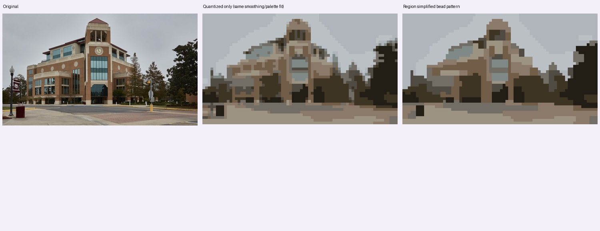
72×41 格 · 10 色 · 2952 粒 · 孤立单粒 98 → 0
可打印 PDF · 完整编号 PNG · 矢量 SVG · 下载全部图纸与清单
配色与净用量
B01 · A02
657 粒 · #B0B5BB
B02 · A09
407 粒 · #BBC0C5
B03 · A04
314 粒 · #9D9383
B04 · A03
309 粒 · #3E3424
B05 · A05
300 粒 · #221D15
B06 · A08
295 粒 · #8B7A6A
B07 · A10
249 粒 · #726D65
B08 · A06
229 粒 · #725D48
B09 · A07
122 粒 · #514C43
B10 · A01
70 粒 · #7F8A88
Carol M. Highsmith · Public domain · 原照片来源
19_animal
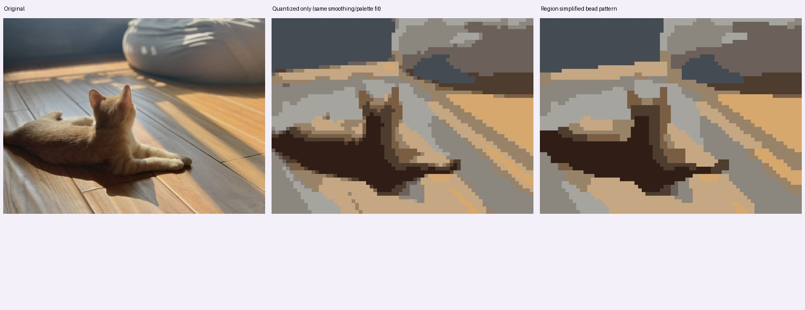
72×54 格 · 10 色 · 3888 粒 · 孤立单粒 99 → 0
可打印 PDF · 完整编号 PNG · 矢量 SVG · 下载全部图纸与清单
配色与净用量
B01 · A02
680 粒 · #8B867E
B02 · A04
585 粒 · #C5A783
B03 · A05
538 粒 · #444B52
B04 · A06
440 粒 · #A6A49F
B05 · A03
392 粒 · #301D15
B06 · A07
324 粒 · #6C615A
B07 · A10
312 粒 · #998368
B08 · A08
273 粒 · #D7A86E
B09 · A09
234 粒 · #4E3C2F
B10 · A01
110 粒 · #7A5E44
HanWsplace · CC0 · 原照片来源
23_portrait
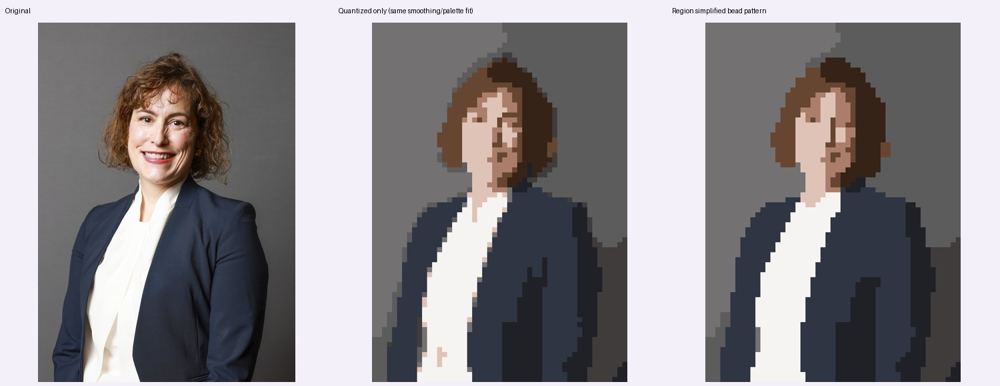
51×72 格 · 10 色 · 3672 粒 · 孤立单粒 48 → 1
可打印 PDF · 完整编号 PNG · 矢量 SVG · 下载全部图纸与清单
配色与净用量
B01 · A08
841 粒 · #737172
B02 · A02
796 粒 · #2F3543
B03 · A04
767 粒 · #5D5C5C
B04 · A01
344 粒 · #F6F4F2
B05 · A05
294 粒 · #202027
B06 · A10
164 粒 · #3F3C3B
B07 · A06
146 粒 · #362318
B08 · A03
136 粒 · #674631
B09 · A07
113 粒 · #DFC3B6
B10 · A09
71 粒 · #AA7E6A
Lauren Hurley / No 10 Downing Street · OGL 3 · 原照片来源
22_portrait
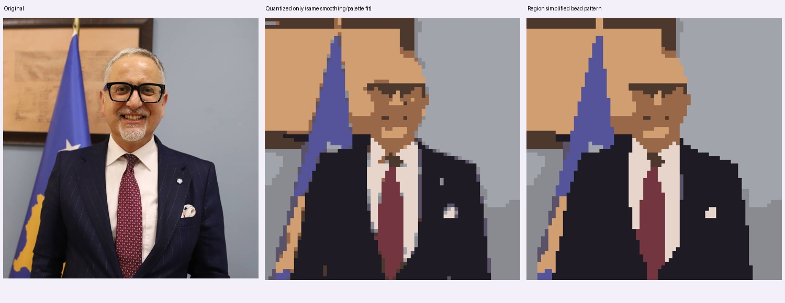
70×72 格 · 10 色 · 5040 粒 · 孤立单粒 76 → 1
可打印 PDF · 完整编号 PNG · 矢量 SVG · 下载全部图纸与清单
配色与净用量
B01 · A02
1349 粒 · #1E1B25
B02 · A03
1204 粒 · #A1A4AB
B03 · A05
891 粒 · #D09E71
B04 · A10
404 粒 · #8A8A91
B05 · A04
278 粒 · #55549B
B06 · A06
241 粒 · #4D382E
B07 · A07
234 粒 · #E7D5CB
B08 · A09
219 粒 · #996849
B09 · A01
177 粒 · #733641
B10 · A08
43 粒 · #5A5269
Ministria e Shëndetësisë e Republikës së Kosovës / Ministry of Health of the Republic of Kosovo · Public domain · 原照片来源
26_portrait
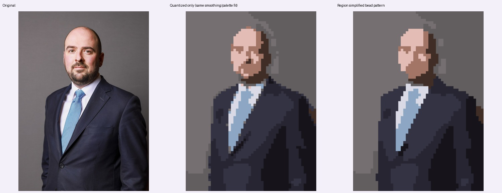
52×72 格 · 10 色 · 3744 粒 · 孤立单粒 51 → 0
可打印 PDF · 完整编号 PNG · 矢量 SVG · 下载全部图纸与清单
配色与净用量
B01 · A02
1032 粒 · #766F71
B02 · A09
723 粒 · #625D5E
B03 · A06
587 粒 · #343343
B04 · A01
505 粒 · #272532
B05 · A10
417 粒 · #16141A
B06 · A07
108 粒 · #8CA6C3
B07 · A03
104 粒 · #E3BCB5
B08 · A04
101 粒 · #3F2D26
B09 · A08
98 粒 · #A37566
B10 · A05
69 粒 · #D9DAE5
Lauren Hurley / No 10 Downing Street · OGL 3 · 原照片来源
27_portrait
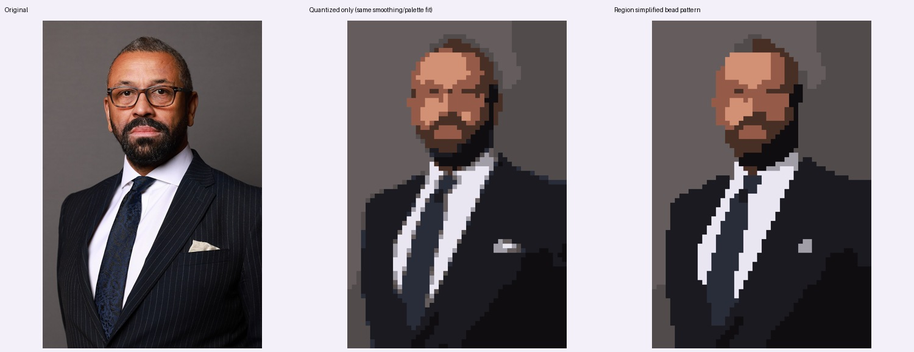
48×72 格 · 10 色 · 3456 粒 · 孤立单粒 88 → 0
可打印 PDF · 完整编号 PNG · 矢量 SVG · 下载全部图纸与清单
配色与净用量
B01 · A02
961 粒 · #1A1A20
B02 · A07
798 粒 · #655D5D
B03 · A03
534 粒 · #514B4B
B04 · A10
426 粒 · #100D10
B05 · A05
206 粒 · #E9E5F1
B06 · A08
161 粒 · #292C39
B07 · A04
136 粒 · #955B48
B08 · A06
119 粒 · #482F26
B09 · A09
93 粒 · #D29075
B10 · A01
22 粒 · #A29EA8
Lauren Hurley / No 10 Downing Street · OGL 3 · 原照片来源
28_portrait
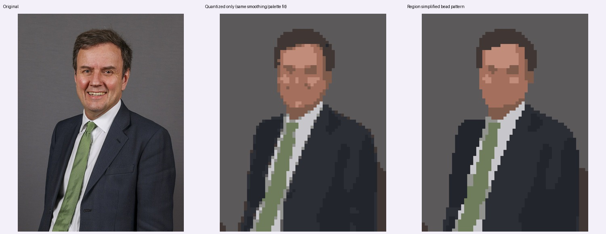
55×72 格 · 10 色 · 3960 粒 · 孤立单粒 68 → 0
可打印 PDF · 完整编号 PNG · 矢量 SVG · 下载全部图纸与清单
配色与净用量
B01 · A01
1853 粒 · #5C595B
B02 · A10
634 粒 · #23252C
B03 · A02
609 粒 · #2C2E36
B04 · A09
188 粒 · #403734
B05 · A05
181 粒 · #6F7D5D
B06 · A08
177 粒 · #A46F5C
B07 · A06
123 粒 · #C7C6CA
B08 · A07
84 粒 · #C18C7A
B09 · A03
67 粒 · #7F5B4C
B10 · A04
44 粒 · #92938F
Rory Arnold / No 10 Downing Street · OGL 3 · 原照片来源
29_portrait
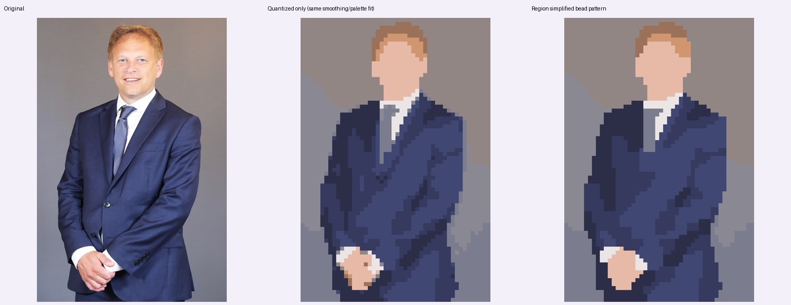
48×72 格 · 10 色 · 3456 粒 · 孤立单粒 52 → 0
可打印 PDF · 完整编号 PNG · 矢量 SVG · 下载全部图纸与清单
配色与净用量
B01 · A07
885 粒 · #918683
B02 · A01
613 粒 · #404773
B03 · A10
485 粒 · #353A5E
B04 · A02
411 粒 · #8A8993
B05 · A04
362 粒 · #2C2E48
B06 · A08
348 粒 · #7B7D8F
B07 · A03
216 粒 · #E7BAA7
B08 · A06
61 粒 · #ECE5E6
B09 · A09
44 粒 · #9B715A
B10 · A05
31 粒 · #CF9670
Alice Hodgson / No 10 Downing Street · OGL 3 · 原照片来源


_01.jpg){kind=link}


_02.jpg){kind=link}